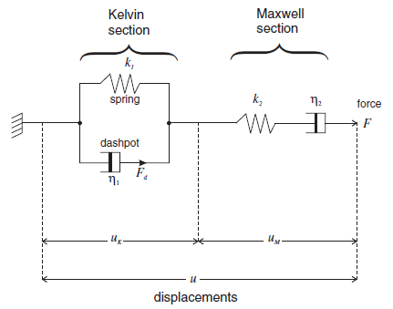

Burgers 模型
Burgers 模型由 Kelvin 模型与 Maxwell 模型（Maxwell model）串联组成，各符号的定义见图 1（Figure 1）。Kelvin 子模型的方程为
其中，\(\bar F\) 和 \(\bar u_k\) 分别为 \(F\) 和 \(u_k\) 在该时间步内的平均值，上标 \({}'\) 和 \({}^\circ\) 分别表示新值和旧值。因此，
Maxwell 子模型的方程为
可改写为
这是相应的有限差分形式。最后，Kelvin 和 Maxwell 部分的位移增量相加，得到施加的位移增量：
式 (4)、(6) 和 (7) 中的未知量为 \(u'_k\)、\(u'_m\) 和 \(F'\)，已知量为 \(u_k^\circ\) 和 \(F^\circ\)。Burgers 模型的响应依赖于历史；记录历史信息的状态变量为 \(u_k\)，其演化方程可由式 (4) 推导得到：
其中：
联立式 (6) 和 (7)，并代入式 (8) 中的 \(u'_k\)，得到
其中：


图 1：Burgers 模型示意图及变量定义。
用于初始化 Kelvin 应变的 FISH 函数
如果使用 zone initialize 命令改变 FLAC3D 模型中的应力，内部 Kelvin 应变 \(e^K_{ij}\) 就会与新应力不相容，并产生运动，直到应变调整完毕。为避免这种不相容，可以将内部应变设置为与当前应力值对应的值。内部 Kelvin 应变 \(e^K_{ij}\) 可作为 设置网格单元属性（zone property） 变量供用户查看和修改，例如 strain-kelvin-xx、strain-kelvin-yy 等。下面给出执行这一步骤的 FISH 函数示例。应在初始化应力后，立即通过“[SetKStrains(::zone.list)]”调用该函数。
以下 FISH 函数可用于根据应力设置 Kelvin 应变。
SetKStrains.dat
fish operator setKstrains(p_z)
local iflag = 0
if zone.model(p_z) = 'burgers' then
iflag = 1
endif
if zone.model(p_z) = 'burgers-mohr' then
iflag = 1
endif
if iflag = 1 then
local kg2 = 2.0 * zone.prop(p_z, 'shear-kelvin')
if kg2 > 0.0 then
local sig0 = (zone.stress.xx(p_z) + zone.stress.yy(p_z) ...
+ zone.stress.zz(p_z))/3.0
zone.prop(p_z,'strain-kelvin-xx') = ...
(zone.stress.xx(p_z) - sig0) / kg2
zone.prop(p_z,'strain-kelvin-yy') = ...
(zone.stress.yy(p_z) - sig0) / kg2
zone.prop(p_z,'strain-kelvin-zz') = ...
(zone.stress.zz(p_z) - sig0) / kg2
zone.prop(p_z,'strain-kelvin-xy') = ...
zone.stress.xy(p_z) / kg2
zone.prop(p_z,'strain-kelvin-xz') = ...
zone.stress.xz(p_z) / kg2
zone.prop(p_z,'strain-kelvin-yz') = ...
zone.stress.yz(p_z) / kg2
endif
endif
end
burgers 模型性质
使用以下关键字，配合 设置网格单元属性（zone property）（FLAC3D）或 设置块体网格单元属性（block zone property）（3DEC）命令，设置 Burgers 模型的这些属性。
- burgers
- bulk f
弹性体积模量，\(K\)
- shear-kelvin f
Kelvin 剪切模量，\(G^K\)
- shear-maxwell f
Maxwell 剪切模量，\(G^M\)
- viscosity-kelvin f
Kelvin 黏度，\(n^K\)
- viscosity-maxwell f
Maxwell 黏度，\(n^M\)
- strain-kelvin-xx f
Kelvin 应变，\(e^K_{xx}\)
- strain-kelvin-yy f
Kelvin 应变，\(e^K_{yy}\)
- strain-kelvin-zz f
Kelvin 应变，\(e^K_{zz}\)
- strain-kelvin-xy f
Kelvin 应变，\(e^K_{xy}\)
- strain-kelvin-xz f
Kelvin 应变，\(e^K_{xz}\)
- strain-kelvin-yz f
Kelvin 应变，\(e^K_{yz}\)
注意事项
- 定义弹性性质时，只需提供以下两种组合中的一种：体积模量 \(K\) 与剪切模量 \(G\)，或杨氏模量 \(E\) 与泊松比 \(v\)。
- 蠕变行为由偏应力触发，而体积变形不考虑蠕变。
- 如果使用
zone initialize命令改变 FLAC3D 模型中的应力，内部 Kelvin 应变 \(e^K_{ij}\) 就会与新应力不相容，并产生运动，直到应变调整完毕。为避免这种不相容，可以将内部应变设置为与当前应力值对应的值。用户可以查看和修改内部 Kelvin 应变 \(e^K_{ij}\)。示例 FISH 函数见 应变刚度设置 FISH 文件（SetKStrain.f3fis）。应在初始化应力之后立即调用该函数。
| 这些内容对您有帮助吗？… 版权与免责声明 |
FLAC3D © 2019, Itasca | 原文更新于 2020 年 10 月 8 日 |